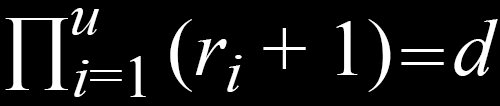

I've recently started working on Project Euler problems as a hobby. Select a link below to display problems that I have correctly solved since the last time this site was updated. All of the code below is also stored in my public GitHub repository euler. All programs are written in C unless otherwise indicated.
If we list all the natural numbers below 10 that are multiples of 3 or 5, we get 3, 5, 6 and 9. The sum of these multiples is 23. Find the sum of all the multiples of 3 or 5 below 1000.
None.
Sum=233168
#include <stdio.h>
#define target 1000
int main() {
int i;
int sum=0;
for(i=0; i<target; i++)
if(i%3==0 || i%5==0)
sum+=i;
printf("Sum=%d",sum);
return 0;
}
Each new term in the Fibonacci sequence is generated by adding the previous two terms. By starting with 1 and 2, the first 10 terms will be:
1, 2, 3, 5, 8, 13, 21, 34, 55, 89, ...
By considering the terms in the Fibonacci sequence whose values do not exceed four million, find the sum of the even-valued terms.
None.
Sum=4613732
#include <stdio.h>
#define MAX 4000000
#define firstTerm 1
#define secondTerm 2
int main() {
int sum = 2;
int curr = 0;
int prev = secondTerm;
int prev2 = firstTerm;
while(curr<=MAX) {
curr = prev + prev2;
if(curr%2==0)
sum+=curr;
prev2 = prev;
prev = curr;
}
printf("Sum=%d\n",sum);
return 0;
}
The prime factors of 13195 are 5, 7, 13 and 29. What is the largest prime factor of the number 600851475143 ?
The time complexity is greatly reduced by replacing 'TARGET' with the 'loop' variable. This is possible because any prime factor p is part of a pair (p,n) of numbers where p × n equals 'TARGET'. Therefore, if a prime factor p is found, the remaining number of iterations that needed to be checked is equal to or less than n.
The largest prime factor of 600851475143 is 6857.
#include <stdio.h>
#include <math.h>
#define TARGET 600851475143
int main() {
double max=0;
double loop=(double)TARGET;
double i;
for(i=1;i<loop;i++) {
if(fmod((double)TARGET,i)==0)
if(isPrime(i)) {
max=i;
loop=TARGET/max;
}
}
printf("The largest prime factor of %.0f is %.0f.",(double)TARGET,max);
return 0;
}
int isPrime(double num) {
if((fmod(num,2)==0 && num!=2) || num==1 || num<=0)
return 0;
double i;
for(i=2;i<num;i++) {
if(fmod(num,i)==0)
return 0;
}
return 1;
}
A palindromic number reads the same both ways. The largest palindrome made from the product of two 2-digit numbers is 9009 = 91 × 99. Find the largest palindrome made from the product of two 3-digit numbers.
I created an integer power function to avoid issues I was having with the double data type.
The largest palindrome possible is 913*993=906609
#include <stdio.h>
#define MAX 999
int main() {
int i,j,test;
int max=0;
int iMax=0;
int jMax=0;
for(i=2;i<=MAX;i++)
for(j=2;j<=MAX;j++) {
test=i*j;
if(isPalindrome(test))
if(test>max) {
max=test;
iMax=i;
jMax=j;
}
}
printf("The largest palindrome possible is %d*%d=%d\n",iMax,jMax,max);
return 0;
}
int isPalindrome(int num) {
int i,j;
int temp=num;
int length=1;
while(temp>9) {
temp/=10;
length++;
}
if(length%2!=0)
return 0;
else {
int array[length];
for(i=0; i<length; i++) {
array[i]=num/power(10,(length-i-1));
num-=array[i]*power(10,(length-i-1));
}
for(j=0; j<(length/2); j++) {
if(array[j]!=array[length-j-1])
return 0;
}
return 1;
}
}
int power(int num, int power) {
int i;
int ans=1;
for(i=0;i<power;i++) {
ans*=num;
}
return ans;
}
2520 is the smallest number that can be divided by each of the numbers from 1 to 10 without any remainder. What is the smallest positive number that is evenly divisible by all of the numbers from 1 to 20?
Poor time complexity.
Largest number that is divisible by numbers 1-20 is 232792560.
#include <stdio.h>
#define MAX 20
int main() {
int i;
int found=0;
int attempt=MAX;
while(!found) {
found=1;
for(i=1;i<=MAX;i++) {
if(attempt%i!=0) {
found=0;
}
}
if(!found)
attempt++;
}
printf("Largest number that is divisible by numbers 1-20 is %d.",attempt);
return 0;
}
The sum of the squares of the first ten natural numbers is, 12 + 22 + ... + 102 = 385.
The square of the sum of the first ten natural numbers is, (1 + 2 + ... + 10)2 = 552 = 3025.
Hence the difference between the sum of the squares of the first ten natural numbers and the square of the sum is 3025 − 385 = 2640.
Find the difference between the sum of the squares of the first one hundred natural numbers and the square of the sum.
None.
25502500 - 338350 = 25164150
#include <stdio.h>
#define TARGET 100
int main() {
int i,diff;
int sumOfSqu=0;
int squOfSum=0;
for(i=1;i<=TARGET;i++) {
sumOfSqu+=power(i,2);
squOfSum+=i;
}
squOfSum=power(squOfSum,2);
diff=squOfSum-sumOfSqu;
printf("%d - %d = %d",squOfSum,sumOfSqu,diff);
return 0;
}
int power(int num, int pow) {
int i;
int ans=1;
for(i=0;i<pow;i++) {
ans*=num;
}
return ans;
}
By listing the first six prime numbers: 2, 3, 5, 7, 11, and 13, we can see that the 6th prime is 13. What is the 10,001st prime number?
None.
The 10001st prime number is: 104743
#include <stdio.h>
#define TARGET 10001
int main() {
int index=1;
int attempt=1;
int found=0;
while(!found) {
attempt++;
if(isPrime(attempt))
if(index==TARGET)
found=1;
else
index++;
}
printf("The %dst prime number is: %d",TARGET,attempt);
return 0;
}
int isPrime(int num) {
if((num%2==0 && num!=2) || num==1 || num<=0)
return 0;
int i;
for(i=2;i<num;i++) {
if(num%i==0)
return 0;
}
return 1;
}
The four adjacent digits in the 1000-digit number that have the greatest product are 9 × 9 × 8 × 9 = 5832.
Find the thirteen adjacent digits in the 1000-digit number that have the greatest product. What is the value of this product?
This program accepts input in the form of a number stored inside of a text file. There cannot be any breaks, spaces, or non-numerical characters in said file.
The largest product of any 13 adjacent digits in the given input is
23514624000 at index 197.
The component numbers are 5x5x7x6x6x8x9x6x6x4x8x9x5.
#include <iostream>
#include <fstream>
#include <string>
#define TARGET 13
using namespace std;
string makeStringOf(string filename);
int main() {
string charArray=makeStringOf("8input.txt");
int numSize=charArray.length();
int numArray[numSize];
int numIter=numSize-TARGET;
int components[TARGET];
int i,j;
int maxIndex=0;
float prod;
float maxProd=1;
for(i=0;i<numSize;i++)
numArray[i]=(int)charArray[i]-48;
for(i=0;i<=numIter;i++) {
prod=1;
for(j=i;j<TARGET+i;j++) {
prod*=numArray[j];
}
if(prod>maxProd) {
maxProd=prod;
maxIndex=i;
}
}
for(i=0;i<TARGET;i++)
components[i]=numArray[maxIndex+i];
printf("The largest product of any %d adjacent digits in the given input is\n%.0f at index %d.\nThe component numbers are ",TARGET,maxProd,maxIndex);
for(i=0;i<sTARGET;i++) {
printf("%d",components[i]);
if(i!=TARGET-1)
printf("x");
else
printf(".\n");
}
return 0;
}
string makeStringOf(string fileName) {
string line;
ifstream textFile;
textFile.open(fileName);
if(textFile.is_open())
getline(textFile,line);
else
printf("A file-related error occurred.\n");
textFile.close();
return line;
}
A Pythagorean triplet is a set of three natural numbers, a<b<c, for which, a2 + b2 = c2. For example, 32 + 42 = 9 + 16 = 25 = 52. There exists exactly one Pythagorean triplet for which a + b + c = 1000. Find the product abc.
Solved, but with O(n3) time complexity where n=TARGET. Can potentially be reduced by breaking whenever a<b<c.
The product abc=31875000
#include <stdio.h>
#define TARGET 1000
int main() {
int a,b,c;
for(a=1;a<TARGET;a++) {
for(b=1;b<TARGET;b++) {
for(c=1;c<TARGET;c++) {
if(a+b+c==1000) {
if(power(a,2)+power(b,2)==power(c,2)) {
printf("The product abc=%d",a*b*c);
return 0;
}
}
}
}
}
printf("Something went wrong. End of program not reached.");
return 0;
}
int power(int num, int pow) {
int i;
int ans=1;
for(i=0;i<pow;i++) {
ans*=num;
}
return ans;
}
The sum of the primes below 10 is 2+3+5+7 = 17. Find the sum of all the primes below two million.
This one was quite challenging for me. I eventually ended up solving it by treating each potential prime p as a pair of numbers (a,b) such that a*b=p, which exponentially reduced the time complexity of my algorithm. See line 24.
The sum of all primes below 2000000 equals 142913828922.
#include <stdio.h>
#define TARGET 2000000
int ceiling(float value);
int main() {
double sum=17;
int term;
for(term=9;term<TARGET;term+=2) {
if(isPrime(term)) {
sum+=term;
}
}
printf("The sum of all primes below %d equals %.0f.\n",TARGET,sum);
return 0;
}
int isPrime(int value) {
int i;
for(i=3;i<=ceiling((float)value/i);i++) {
if(value%i==0) {
return 0;
}
}
return 1;
}
int ceiling(float value) {
if((int)value<value)
return ((int)value)+1;
else
return (int)value;
}
In the 20×20 grid below, four numbers along a diagonal line have been marked in red.
The product of these numbers is 26 × 63 × 78 × 14 = 1788696.
What is the greatest product of four adjacent numbers in the same direction (up, down, left, right, or diagonally) in the 20×20 grid?
A good portion of this programs length comes from the fact that it accepts a grid in the form of a text file. The expected input format is:
* input file is called "11input.txt"
* the grid is size n×n where each row n occupies its own individual line
* each number x is in the range 0 < x < 100
* there is one space between each number
* each number occupies two spaces, regardless of whether or not the number is less than 10 (example: 8 would be written in the file as 08)
Input successful.
The largest product of any 4 adjacent numbers from the given input is 70600674 beginning at row 13, column 7 in the southwestern direction.
The components of this product are 89x94x97x87.
#include <iostream>
#include <fstream>
#include <string>
#define GRID 20
#define TARGET 4
using namespace std;
int removeSpaces(string &aString);
int main() {
int i,j,k,piece,numArray[GRID][GRID];
char temp;
string line[GRID];
ifstream textFile;
textFile.open("11input.txt");
if(textFile.is_open()) {
for(i=0;i<GRID;i++) {
getline(textFile,line[i]);
if(!removeSpaces(line[i])) {
printf("Invalid input format. Each number must be expressed as exactly two digits and the grid must be size %dx%d.\n",GRID,GRID);
return 0;
}
for(j=0;j<GRID;j++) {
temp=line[i][0];
piece=10*((int)temp-48);
temp=line[i][1];
piece+=(int)temp-48;
line[i].erase(0,2);
numArray[i][j]=piece;
}
}
printf("Input successful.\n");
}
else {
printf("Error opening file.\n");
return 0;
}
textFile.close();
/* end array prep */
double prodArray[8]; // 0-3 correspond to NESW, respectively. 4-7 correspond to NE,SE,SW,NW, respectively
double maxProdArray[TARGET];
for(i=0;i<8;i++)
prodArray[i]=1;
for(i=0;i<TARGET;i++)
maxProdArray[i]=1;
double maxProd=1;
int maxRow=0;
int maxCol=0;
int dirInt=-1;
string direction="placeholder";
for(i=0;i<GRID;i++) {
for(j=0;j<GRID;j++) {
if(i>=TARGET-1) { //checks North
for(k=0;k<TARGET;k++)
prodArray[0]*=numArray[i-k][j];
}
if(j<=GRID-TARGET) { //checks East
for(k=0;k<TARGET;k++)
prodArray[1]*=numArray[i][j+k];
}
if(i<=GRID-TARGET) { //checks South
for(k=0;k<TARGET;k++)
prodArray[2]*=numArray[i+k][j];
}
if(j>=TARGET-1) { //checks West
for(k=0;k<TARGET;k++)
prodArray[3]*=numArray[i][j-k];
}
if(i>=TARGET-1 && j<=GRID-TARGET) { //check North AND East
for(k=0;k<TARGET;k++)
prodArray[4]*=numArray[i-k][j+k];
}
if(i<=GRID-TARGET && j<=GRID-TARGET) { //checks South AND East
for(k=0;k<TARGET;k++)
prodArray[5]*=numArray[i+k][j+k];
}
if(i<=GRID-TARGET && j>=TARGET-1) { //checks South AND West
for(k=0;k<TARGET;k++)
prodArray[6]*=numArray[i+k][j-k];
}
if(i>=TARGET-1 && j>=TARGET-1) { //checks North AND West
for(k=0;k<TARGET;k++)
prodArray[7]*=numArray[i-k][j-k];
}
// end multiplying in each direction
for(k=0;k<8;k++) { //check to see if there's a new maximum product
if(prodArray[k]>maxProd) {
maxProd=prodArray[k];
maxRow=i+1;
maxCol=j+1;
dirInt=k;
}
prodArray[k]=1;
}
}
}
switch(dirInt) {
case(0):
direction="northern";
for(k=0;k<TARGET;k++)
maxProdArray[k]=numArray[maxRow-1-k][maxCol-1];
break;
case(1):
direction="eastern";
for(k=0;k<TARGET;k++)
maxProdArray[k]=numArray[maxRow-1][maxCol-1+k];
break;
case(2):
direction="southern";
for(k=0;k<TARGET;k++)
maxProdArray[k]=numArray[maxRow-1+k][maxCol-1];
break;
case(3):
direction="western";
for(k=0;k<TARGET;k++)
maxProdArray[k]=numArray[maxRow-1][maxCol-1-k];
break;
case(4):
direction="northeastern";
for(k=0;k<TARGET;k++)
maxProdArray[k]=numArray[maxRow-1-k][maxCol-1+k];
break;
case(5):
direction="southeastern";
for(k=0;k<TARGET;k++)
maxProdArray[k]=numArray[maxRow-1+k][maxCol-1+k];
break;
case(6):
direction="southwestern";
for(k=0;k<TARGET;k++)
maxProdArray[k]=numArray[maxRow-1+k][maxCol-1-k];
break;
case(7):
direction="northwestern";
for(k=0;k<TARGET;k++)
maxProdArray[k]=numArray[maxRow-1-k][maxCol-1-k];
break;
default:
direction="[Error: cannot determine the vector of maximum product]";
}
cout<<"The largest product of any "<<TARGET<<" adjacent numbers from the given input is ";
printf("%.0f",maxProd);
cout<<"\nbeginning at row "<<maxRow<<", column "<<maxCol<<" in the "<<direction<<" direction.\n";
cout<<"The components of this product are ";
for(k=0;k<TARGET;k++) {
cout<<maxProdArray[k];
if(k<TARGET-1)
cout<<"x";
}
cout<<".\n";
return 0;
}
int removeSpaces(string &aString) {
int i;
int strSize = aString.length();
for(i=0;i<strSize;i++)
if((int)aString[i]==32)
aString.erase(i,1);
if(aString.length()==(2*GRID))
return 1;
else
return 0;
}
The sequence of triangle numbers is generated by adding the natural numbers. So the 7th triangle number would be 1+2+3+4+5+6+7 = 28. The first ten terms would be: 1, 3, 6, 10, 15, 21, 28, 36, 45, 55, ...
Let us list the factors of the first seven triangle numbers:
1: 1
2: 1,3
6: 1,2,3,6
10: 1,2,5,10
15: 1,3,5,15
21: 1,3,7,21
28: 1,2,4,7,14,28
We can see that 28 is the first triangle number to have over five divisors. What is the value of the first triangle number to have over five hundred divisors?
This one took me a while because of the methodology I chose. In order to calculate the number of divisors in a triangle number, I broke down each number in the series into its component primes. This part was relatively simple.
Once a set of primes is obtained, the number of divisors the original number has is equal to the number of unique subsets that can be created with the set of primes (regardless of order). This part was trickier for me because prime components can be repeated (example: 180=2*2*3*3*5).
Eventually I derived the following formula to calculate d, the number of divisors, given any set of primes:
where u=the number of unique primes in the set and ri=how many times the ith prime in the set is repeated.
The first triangle number to have over 500 divisors is term number 12375 equal to 76576500.
#include <stdio.h>
#include <stdlib.h>
#define TARGET 500
int makePrimeComponentArray(int **arrayOfComponents, int value);
int main() {
int termNum=1;
long termVal=1;
int found=0;
int *arrayOfComponents;
int i,numPrimes,numDivs;
arrayOfComponents = malloc(100*sizeof(int *)); //100 is an overestimate of how many
for(i=0;i<100;i++) { //component primes I will need to calculate
arrayOfComponents[i]=0;
}
while(!found) {
termNum++;
termVal+=termNum;
int maxIndex=makePrimeComponentArray(&arrayOfComponents,termVal);
if(getNumDivs(&arrayOfComponents,maxIndex)>TARGET)
found=1;
for(i=0;i<maxIndex;i++) {
arrayOfComponents[i]=0;
}
}
printf("The first triangle number to have over %d divisors is term number %d equal to %d.\n",TARGET,termNum,termVal);
return 0;
}
int makePrimeComponentArray(int **arrayOfComponents, int value) {//sets up the prime components so that divisors can be easily calculated
int curIndex=0;//odd indexes are primes, even indexes are the number of times the (i-1) prime is repeated
int i=2;
while(value>1) {
if(value%i==0) { //if i is a prime component of the number being tested
value/=i;
(*arrayOfComponents)[curIndex]=i;
i=2;
if(curIndex>1 && (*arrayOfComponents)[curIndex-2]==(*arrayOfComponents)[curIndex]) {
(*arrayOfComponents)[curIndex]=0;
(*arrayOfComponents)[curIndex-1]+=1;
}
else {
(*arrayOfComponents)[curIndex+1]+=1;
curIndex+=2;
}
}
else {
i++;
}
}
return curIndex;
}
int getNumDivs(int **arrayOfComponents, int maxIndex) {
int i;
int divs=1;
for(i=1;i<maxIndex;i+=2) {
divs*=((*arrayOfComponents)[i]+1);
}
return divs;
}
Work out the first ten digits of the sum of the following one-hundred 50-digit numbers.
Accepts input in the form of a text file called 13input.txt.
The first 10 digits of the sum of the input equals 5537376230
#include <iostream>
#include <fstream>
#include <string>
#include <cmath>
using namespace std;
double power(int num, int power);
int main() {
string line[100];
ifstream textFile;
textFile.open("13input.txt");
int i,j,k;
if(textFile.is_open()) {
for(i=0;i<100;i++)
getline(textFile,line[i]);
}
else
printf("A file-related error occurred.\n");
textFile.close();
double numArray[100][5];
for(i=0;i<100;i++) //initialize
for(j=0;j<5;j++)
numArray[i][j]=0;
for(i=0;i<100;i++) { //breaks each number into a series of 5 10-digit numbers
for(j=0;j<5;j++) {
for(k=0;k<10;k++) {
numArray[i][j]+= ((int)line[i][k+(j*10)]-48) * power(10,(9-k));
}
}
}
double sum=0;
for(i=4;i>=0;i--) {
for(j=0;j<100;j++)
sum+=numArray[j][i];
if(i>0)
sum=floor(sum/10000000000);
}
while(sum>9999999999) {
sum=floor(sum/10);
}
printf("The first 10 digits of the sum of the input equals %.0f\n",sum);
return 0;
}
double power(int num, int power) {
int i;
double ans=1;
for(i=0;i<power;i++) {
ans*=num;
}
return ans;
}
The following iterative sequence is defined for the set of positive integers:
n -> n/2 (n is even)
n -> 3n + 1 (n is odd)
Using the rule above and starting with 13, we generate the following sequence:
13 -> 40 -> 20 -> 10 -> 5 -> 16 -> 8 -> 4 -> 2 -> 1
It can be seen that this sequence (starting at 13 and finishing at 1) contains 10 terms. Although it has not been proved yet (Collatz Problem), it is thought that all starting numbers finish at 1.
Which starting number, under one million, produces the longest chain?
NOTE: Once the chain starts the terms are allowed to go above one million.
None.
The longest sequence chain is 525 terms long and occurs when starting at 837799.
#include <stdio.h>
#define TARGET 1000000
int main() {
long count;
long iter;
long value;
long maxCount=1;
long maxCountAt=0;
for(iter=2; iter<TARGET; iter++) {
value=iter;
count=1;
while(value>1) {
if(value%2==0) { //if even
value/=2;
} else { //if odd
value=3*value+1;
}
count++;
}
if(count>maxCount) {
maxCount=count;
maxCountAt=iter;
}
}
printf("The longest sequence chain is %d terms long and occurs when starting at %d.\n",maxCount,maxCountAt);
return 0;
}
215 = 32768 and the sum of its digits is 3+2+7+6+8 = 26. What is the sum of the digits of the number 21000?
None.
The sum of the digits that compose the number 2^1000 is 1366.
#include <iostream>
#include <fstream>
#include <cstring>
#include <iomanip>
using namespace std;
int main() {
int i,bigLength;
int sum=0;
double big=2.0;
for(i=2;i<=1000;i++) {
big*=2;
}
ofstream inputFile;
inputFile.open("16io.txt");
if(inputFile.is_open()) {
inputFile << fixed << showpoint; //this line and the next prevent 'big' from
inputFile << setprecision(1); //being written out in scientific notation
inputFile << big;
}
else
printf("A file-related error occurred.\n");
inputFile.close();
string number;
ifstream outputFile;
outputFile.open("16io.txt");
if(outputFile.is_open())
getline(outputFile,number);
else
printf("A file-related error occurred.\n");
outputFile.close();
bigLength=number.length()-2; //the last two items in the array are '.0'
for(i=0;i<bigLength;i++) {
sum+=(int)number[i]-48;
}
printf("The sum of the digits that compose the number 2^1000 is %d.\n",sum);
return 0;
}
If the numbers 1 to 5 are written out in words: one, two, three, four, five, then there are 3+3+5+4+4 = 19 letters used in total.
If all the numbers from 1 to 1000 (one thousand) inclusive were written out in words, how many letters would be used?
NOTE: Do not count spaces or hyphens. For example, 342 (three hundred and forty-two) contains 23 letters and 115 (one hundred and fifteen) contains 20 letters. The use of "and" when writing out numbers is in compliance with British usage.
I made the program output each number in addition to counting the letters as part of the debugging process. I have left this feature in my code, but omitted the number list from the Output below.
The sum of the number of letters in the numbers [1,1000] is 21124.
#include <stdio.h>
#include <string.h>
#include <stdlib.h>
int main() {
int i,tens;
long sum=0;
int array[91];
char **testArray;
//initialize array and testArray, including indexes which will only be accessed if an error occurs
for(i=0;i<91;i++) {
array[i]=-30000;
}
array[0]=0; //0 letters
array[1]=3; //"one"
array[2]=3; //"two"
array[3]=5; //"three"
array[4]=4; //"four"
array[5]=4; //"five"
array[6]=3; //"six"
array[7]=5; //"seven"
array[8]=5; //"eight"
array[9]=4; //"nine"
array[10]=3; //"ten"
array[11]=6; //"eleven"
array[12]=6; //"twelve"
array[13]=8; //"thirteen"
array[14]=8; //"fourteen"
array[15]=7; //"fifteen"
array[16]=7; //"sixteen"
array[17]=9; //"seventeen"
array[18]=8; //"eighteen"
array[19]=8; //"nineteen"
array[20]=6; //"twenty"
array[30]=6; //"thirty"
array[40]=5; //"forty"
array[50]=5; //"fifty"
array[60]=5; //"sixty"
array[70]=7; //"seventy"
array[80]=6; //"eighty"
array[90]=6; //"ninety"
testArray = malloc(91*sizeof(int *));
for(i=0;i<91;i++) {
testArray[i] = malloc(array[i]*sizeof(int));
}
testArray[1]="one";
testArray[2]="two";
testArray[3]="three";
testArray[4]="four";
testArray[5]="five";
testArray[6]="six";
testArray[7]="seven";
testArray[8]="eight";
testArray[9]="nine";
testArray[10]="ten";
testArray[11]="eleven";
testArray[12]="twelve";
testArray[13]="thirteen";
testArray[14]="fourteen";
testArray[15]="fifteen";
testArray[16]="sixteen";
testArray[17]="seventeen";
testArray[18]="eighteen";
testArray[19]="nineteen";
testArray[20]="twenty";
testArray[30]="thirty";
testArray[40]="forty";
testArray[50]="fifty";
testArray[60]="sixty";
testArray[70]="seventy";
testArray[80]="eighty";
testArray[90]="ninety";
for(i=1;i<1000;i++) {
if(i>=100) {
sum+=7; //"hundred"
sum+=array[(int)(i/100)]; //how many hundreds
tens=i-100*(int)(i/100); //tens part of the number
printf("%s hundred ",testArray[(int)(i/100)]);
if(!(i%100==0)) { //if the number is not a multiple of 100
sum+=3; //"and"
printf("and ");
if(tens<=20 || tens%10==0) {
sum+=array[tens];
printf("%s",testArray[tens]);
} else {
sum+=array[(int)(tens/10)*10]; //tens
sum+=array[tens%10]; //units
printf("%s-%s",testArray[(int)(tens/10)*10],testArray[tens%10]);
}
}
} else { //for all numbers less than 100
if(i<=20 || i%10==0) {
sum+=array[i];
printf("%s",testArray[i]);
} else {
sum+=array[(int)(i/10)*10]; //tens
sum+=array[i%10]; //units
printf("%s-%s",testArray[(int)(i/10)*10],testArray[i%10]);
}
}
printf("\n");
}
sum+=11; //"one thousand"
printf("one thousand\n");
printf("The sum of the number of letters in the numbers [1,1000] is %d.\n",sum);
return 0;
}
By starting at the top of the triangle below and moving to adjacent numbers on the row below, the maximum total from top to bottom is 23.
2
8 5
That is, 3+7+4+9 = 23.
For 18: Find the maximum total from top to bottom in the triangle give in my github file that contains 15 rows.
For 67: Find the maximum total from top to bottom in triangle.txt, a 15K text file containing a triangle with one-hundred rows.
This entry encompasses solutions for both problems 18 and 67, which are technically the same, only 67 forces the coder to use a more efficient algorithm than in 18.
For 18:
Use input from problem 18 (small) or problem 67 (large)? Enter desired problem number and press enter: 18
The maximum total from top to bottom of the triangle with 15 lines is 1074.
For 67:
Use input from problem 18 (small) or problem 67 (large)? Enter desired problem number and press enter: 67
The maximum total from top to bottom of the triangle with 100 lines is 7273.
#include <iostream>
#include <fstream>
#include <string>
using namespace std;
int main() {
string temp; //stores individual lines read in through .txt file
string pref; //stores the user's decision to run 18 or 67 in STRING form
int choice; //stores the user's decision to run 18 or 67 in INT form
int i,j;
int dig1,dig2; //temporary storage used when converting string numbers to ints
int TARGET; //stores how many lines are read in from .txt file
int userInput=0; //tracks whether or not the user has entered appropriate input
ifstream textFile;
while(!userInput) { //allows user to choose between running prob18 and prob67
cout<<"Use input from problem 18 (small) or problem 67 (large)? Enter desired problem number and press enter: ";
cin>>pref;
if(pref.length()==2) {
dig1 = (int)pref[0]-48;
dig2 = (int)pref[1]-48;
}
else {
cout<<"\nInvalid input. Please try again.\n";
}
choice=dig1*10+dig2;
if(choice==18) {
TARGET=15;
textFile.open("18input.txt");
userInput=1;
}
else if(choice==67) {
TARGET=100;
textFile.open("67input.txt");
userInput=1;
}
else {
cout<<"\nInvalid input. Please try again.\n";
}
}
//reading input from file and storing in string form
string line[TARGET]; //stores the entire .txt input in string form
if(textFile.is_open())
for(i=0;i<TARGET;i++) {
getline(textFile,temp);
line[i]=temp;
}
else
printf("A file-related error occurred.\n");
textFile.close();
//end read
//formatting string input to int array
int triangle[TARGET][TARGET];
for(i=0;i<TARGET;i++) {
for(j=0;j<TARGET;j++) {
triangle[i][j]=-1; //unused indecies initialized to -1 for debugging purposes
}
}
for(i=0;i<TARGET;i++) {
int k=0;
for(j=0;j<=i;j++) {
int dig1=((int)line[i][k]-48)*10;
int dig2=(int)line[i][k+1]-48;
int num=dig1+dig2;
triangle[i][j]=num;
k+=3;
}
}//end format
//algorithm begins
for(i=TARGET-1;i>=0;i--) {
for(j=0;j<i;j++) {
if(triangle[i][j]>triangle[i][j+1]) {
triangle[i-1][j]+=triangle[i][j];
}
else {
triangle[i-1][j]+=triangle[i][j+1];
}
}
}//end algorithm
cout<<"The maximum total from top to bottom of the triangle with "<<TARGET<" lines is "<<triangle[0][0]<<".\n";
return 0;
}
The series, 11 + 22 + 33 + ... + 1010 = 10,405,071,317. Find the last ten digits of the series, 11 + 22 + 33 + ... + 10001000.
None.
The last 10 digits of the series 1^1 + 2^2 + 3^3 +...+ 1000^1000 is 9110846700
#include <stdio.h>
#include <math.h>
#define TARGET 1000
int main() {
double sum=0;
double item;
int i,j;
for(i=1;i<=TARGET;i++) {
item=i;
for(j=1;j<i;j++) {
item*=i;
if(item>9999999999)
item-=10000000000*floor(item/10000000000);
}
sum+=item;
}
sum-=10000000000*floor(sum/10000000000);
printf("The last 10 digits of the series 1^1 + 2^2 + 3^3 +...+ %.0f^%.0f is\n%.0f",(double)TARGET,(double)TARGET,sum);
return 0;
}